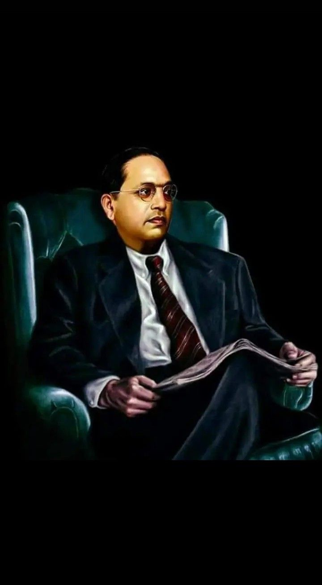

1907, he passed his matriculation examination and in the following year he entered Elphinstone College, which was affiliated to the University of Bombay, becoming, according to him, the first from his Mahar caste to do so. When he passed his English fourth standard examinations, the people of his community wanted to celebrate because they considered that he had reached "great heights" which he says was "hardly an occasion compared to the state of education in other communities". A public ceremony was evoked, to celebrate his success, by the community, and it was at this occasion that he was presented with a biography of the Buddha by Dada Keluskar, the author and a family friendBy 1912, he obtained his degree in economics and political science from Bombay University, and prepared to take up employment with the Baroda state government. His wife had just moved his young family and started work when he had to quickly return to Mumbai to see his ailing father, who died on 2 February 1913.
